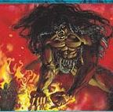

JOEL R. SOCORRO

Summary
I am a dependable, efficient worker who has the ability to work on my own or with a team.
Education
- Master of Science in Information Technology - Polytechnic University of the Philippines Graduate School
(June 2000 - December 2006)
- Thesis: Design and Development of PUPTxt: An SMS Model for PUP
- Bachelor in Computer Data Processing Management - Polytechnic University of the Philippines (June 1993-
March 1997)
Work Experience
-
Senior Application Database Administrator - ITPI Philippines, Inc.
March 2009 - present
- Design and development of databases as per requirements
- Coordinates with developers, business analysts in matters concerning data flows, business requirements,
etc.
- Creates scripts for stored procedures, functions, triggers, etc., and Reports
- Technical support for application DB related issues in development, uat, live environments
-
Senior Developer / Application Database Administrator - Commission on Audit
September 2003 - March 2009
- Design and development of Common Library, Security System, Collection System, etc. using C#.NET
2005/MSSQL 2005
- Technical support and implementation of e-NGAS ASE version
-
System Analyst - LG Systems Philippines, Inc.
September 2001 - February 2003
- Handles all Non-Title Systems such Remittance and Collection, Statistics System, Judicial Form Balances,
etc.
- Designs, coordinates with other developers and/or DBAs, and also takes part in the actual development of
assigned modules
- Main proponent and technical resource in implementation of Crystal Reports as separate from the
application files
-
Analyst Programmer - AIG Credit Card Philippines, Inc. (via Information Professionals, Inc.)
August 2000 - September 2001
- Development, support of assigned credit card related modules
-
Senior Analyst Programmer - PUP Information Linkages, Inc.
March 1999 - August 2000
- Development, support of assigned modules concerning Admission,etc.
-
Information Engineer II - IEWorks, Inc.
June 1998 - March 1999
- Development, support of an insurance application
-
Analyst Programmer - WASSLAI, MWSS
May 1997 - June 1998
- Development, support of savings and loans system
Skills
- Database design
- Transact-SQL Scripting
- Windows application programming using C#.NET, Visual Basic 6.0
- Teaching / mentoring
- Can easily adapt to new technologies
- Can supervise a team
Awards / Certifications
- Passed the Civil Service Professional Exam on June 1997
Others